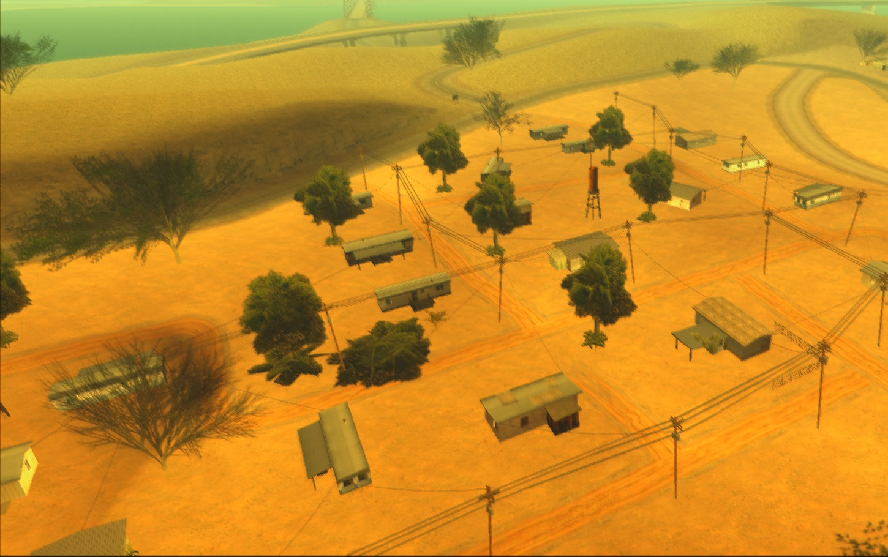
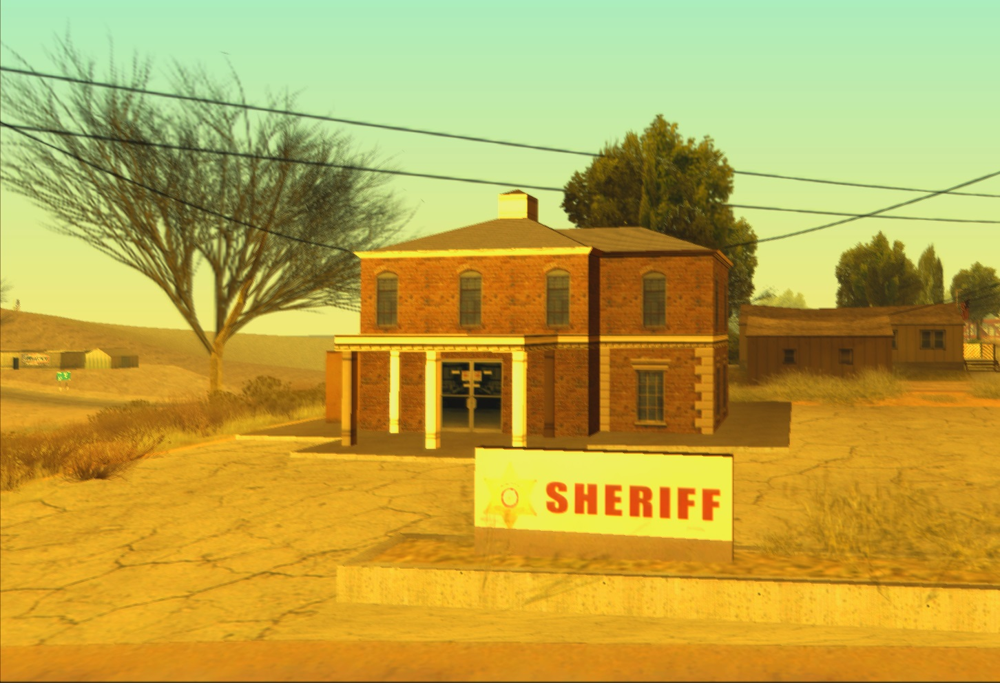

Świat Fort Carson
W naszej wizji Fort Carson będzie tętniącym życiem ekosystemem różnorodnych frakcji i grup interesów

Półświatek
Życie poza prawem
Fort Carson skrywa mroczną stronę, gdzie rządzą różne grupy przestępcze. W tej wizji gracze będą mogli dołączać do istniejących frakcji lub budować własne struktury w półświatku.

Biznes
Świat przedsiębiorczości
Planujemy stworzyć bogaty ekosystem biznesowy, gdzie gracze będą mogli prowadzić legalne interesy - od małych sklepików po duże korporacje.

Służby publiczne
Strażnicy porządku
Planujemy rozbudowany system służb publicznych, gdzie gracze będą mogli wcielić się w role policjantów, medyków, strażaków czy urzędników.